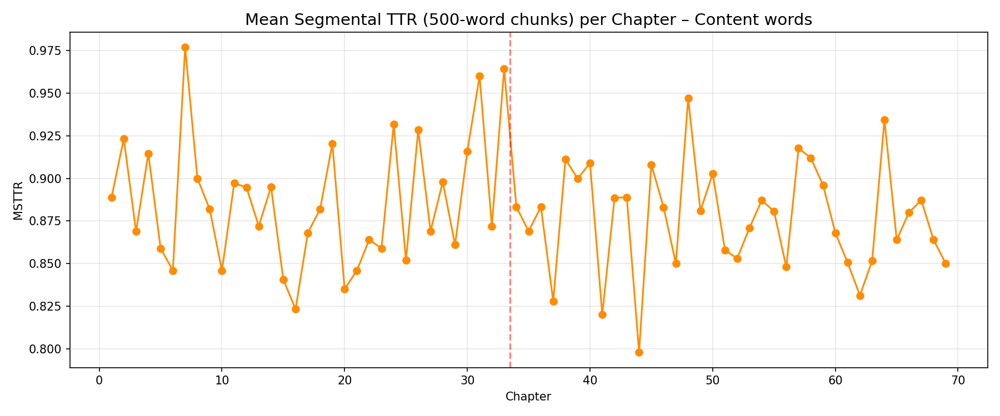

Lexical map of Lolita
Mapping the distinctive vocabulary of Nabokov’s novel with TF‑IDF
Abstract
This project applies TF‑IDF and lexical‑diversity measures to Vladimir Nabokov’s Lolita. The 69‑chapter split illustrates the the importance of the aestheticism in the book. A slight difference can be noticed, however, since Part one is saturated with more intimate, domestic terms and Humbert's childhood (diary, key, toilet, frock), while Part Two shifts to more outdoor pursuit because that is when Humbert sets out on a journey across America with Lolita, with the more distinctive words such as (ball, racket, hunter, journey). The most distinctive word in the entire novel is seraph – used only twice, but through which Humbert idealizes his lost childhood experience and his first love Annabel Lee. The frequency of nymphet across chapters (plotted below) confirms that is appears predominantly in Part one, dropping after the Part One/Part Two boundary, which might point to the fatc that Humbert first defines the nymphets, but as the story progresses, Lolita is shown more as a human than a mythological creature.
Result



The full chapter‑level data is available as a CSV file.
The numbers
The full data is in chapter_metadata.csv.
| Item | Measure | Value |
|---|---|---|
| Most distinctive word (Part 1) | TF‑IDF (mean) | sand, key, page, frock, born, sea, enchanted, toilet, box |
| Most distinctive word (Part 2) | TF‑IDF (mean) | ball, racket, boy, hunter, party, train, girl, understand, journey |
| Overall most distinctive word | TF‑IDF (max) | seraph |
How it was made
The full text of Lolita was split into 69 chapters using Python.
Words were lowercased, lemmatised with NLTK’s WordNetLemmatizer, and filtered by removing English stopwords
as well as a custom list of character names and common narrative words (e.g., “said”, “know”, “like”, “time”).
TF‑IDF vectors were computed per chapter with scikit‑learn’s TfidfVectorizer, then post‑filtered to exclude
words appearing in more than 20% of all chapters. The word clouds were generated from mean TF‑IDF scores per part.
The complete pipeline, including all figures and data, can be reproduced by running the Python notebook in this repository.
See the README for full details.